1. Kasus: Lab yang Lemot
Senin pagi, Pak Budi menjadwalkan asesmen daring di Lab Informatika SMP Negeri 14 Tarakan. Ada 30 PC yang membuka aplikasi bank soal pada saat yang sama. Hasilnya: halaman soal baru terbuka setelah lebih dari dua menit, beberapa PC menampilkan tulisan “tidak ada internet”, dan ada PC yang kadang bisa kadang tidak. Anehnya, siswa yang membuka bank soal lewat HP dengan data seluler justru lancar. (Kasus ini fiktif, disusun untuk latihan.)
Pertemuan lalu kamu tahu data dipecah jadi paket dan lewat router. Sekarang: kalau ada yang macet, di mana letak masalahnya dan bagaimana memperbaikinya? Kamu jadi teknisi jaringan!
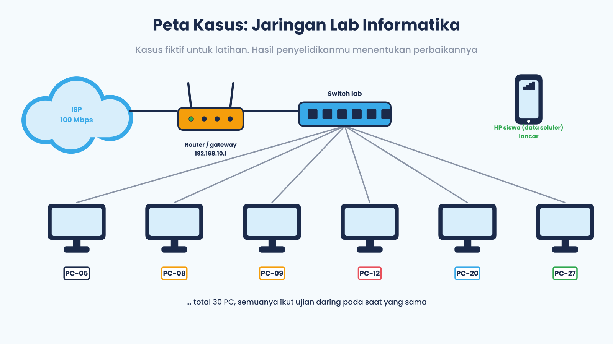
Yang akan kamu selidiki:
- Mengapa halaman bank soal sangat lambat saat 30 PC membukanya bersamaan?
- Mengapa ada PC yang “tidak ada internet” dan ada yang putus-nyambung?
- Mengapa HP dengan data seluler lancar padahal Wi-Fi/LAN lab bermasalah?
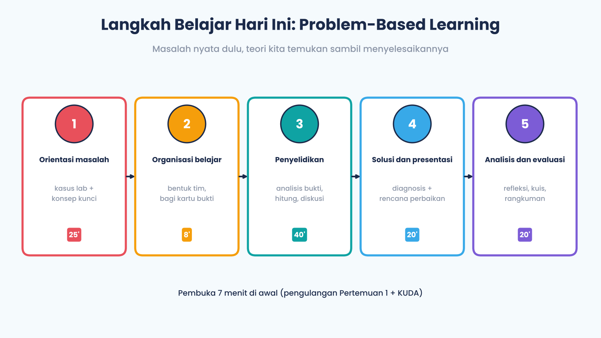
2. Apa yang Terjadi Saat Kamu Menekan Enter?
Komputer nggak ngerti nama seperti www.sekolah.id. Dia cuma ngerti alamat IP. Jadi ada empat langkah:
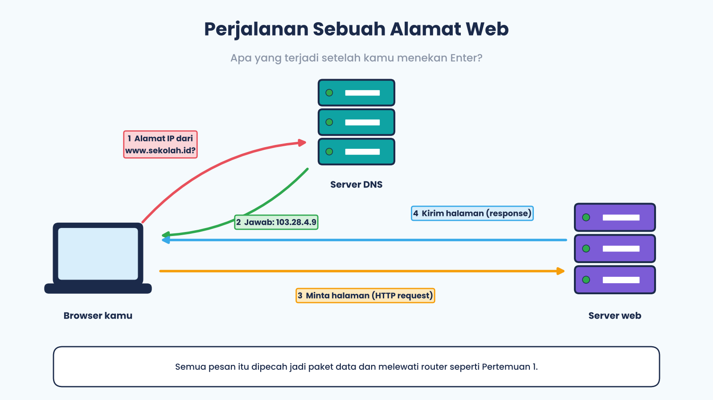
2.1 DNS: Buku Telepon Internet
DNS menerjemahkan nama domain jadi alamat IP. Kamu hafal nama teman, telepon butuh nomor. DNS itu buku teleponnya.
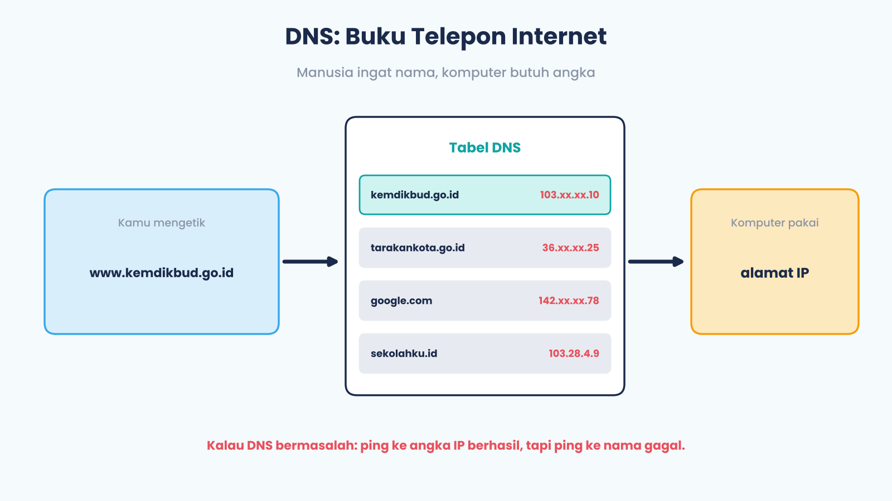
3. Alamat IP: Bedah Lebih Dalam
IPv4 terdiri atas 4 oktet (0 sampai 255), total 32 bit. Subnet mask menunjukkan bagian jaringan dan bagian perangkat.
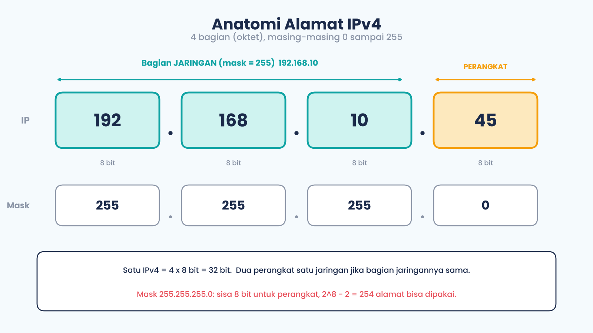
- Satu jaringan? Bandingkan bagian jaringannya.
- Jumlah perangkat: 2^8 - 2 = 254 alamat.
- Gateway = alamat router, pintu keluar jaringan.
- DHCP membagi IP otomatis. IP 169.254.x.x = gagal dapat IP.
- Konflik IP = dua perangkat memakai IP sama.
🧪 Coba Sendiri: Satu jaringan atau bukan?
3.1 IP Privat, IP Publik, dan NAT
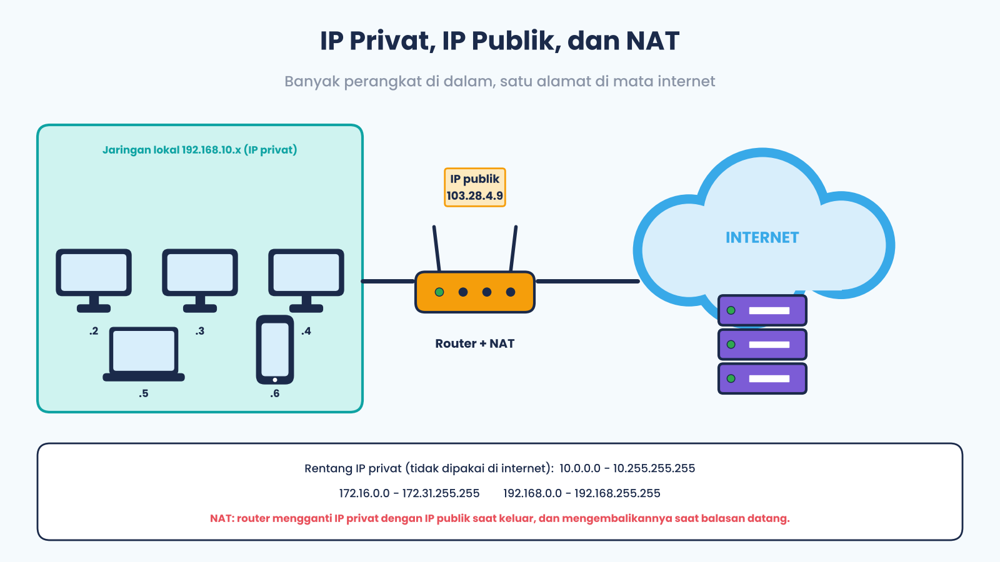
IP privat (10.x.x.x, 172.16 sampai 172.31, 192.168.x.x) hanya di jaringan lokal. IP publik unik di internet. Router memakai NAT untuk mengganti IP privat dengan IP publik saat data keluar.
🧪 Coba Sendiri: Privat atau publik?
4. Seberapa Cepat? Bandwidth, Latency, Packet Loss
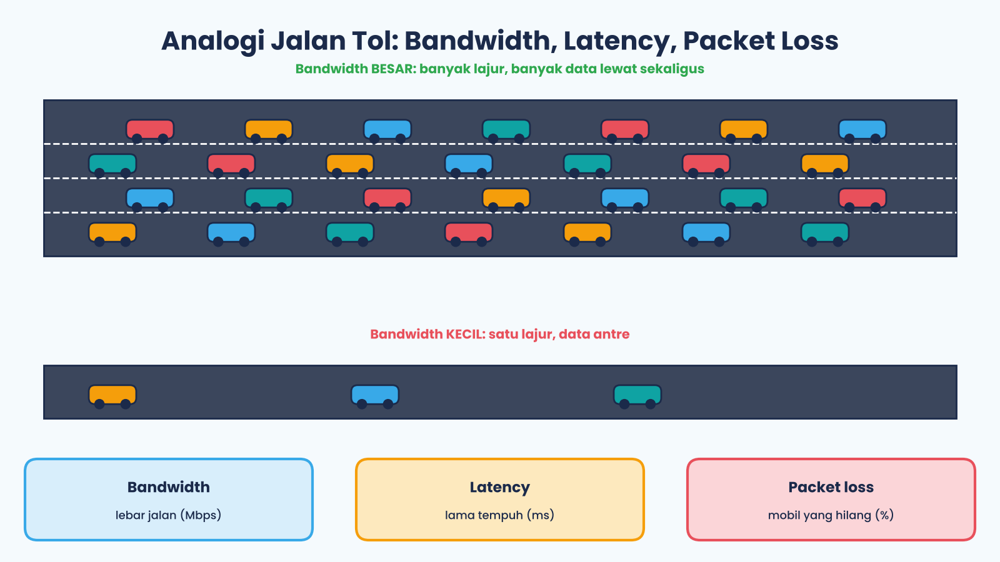
| Istilah | Artinya | Satuan |
|---|---|---|
| Bandwidth | Kapasitas data per detik (lebar jalan) | Mbps |
| Latency | Waktu paket pergi dan kembali | ms |
| Packet loss | Persentase paket hilang | % |
🧪 Coba Sendiri: Kalkulator waktu unduh
5. Ping dan Cara Mendiagnosis
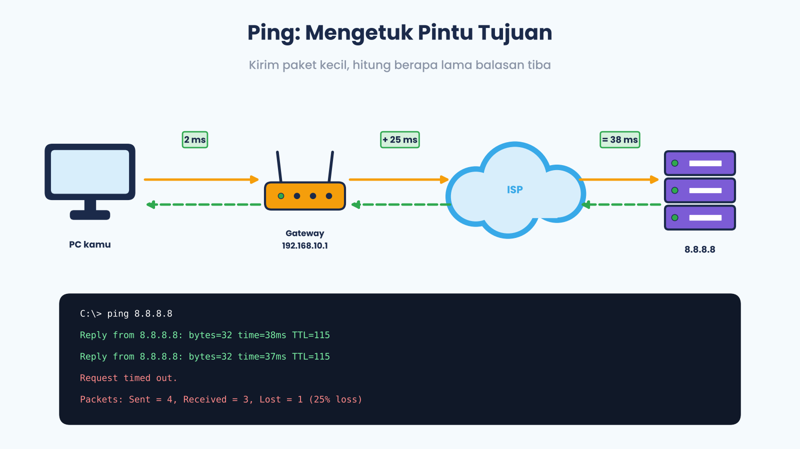
Teknisi memeriksa dari yang paling dekat ke yang paling jauh. Masalah ada tepat setelah langkah terakhir yang berhasil.
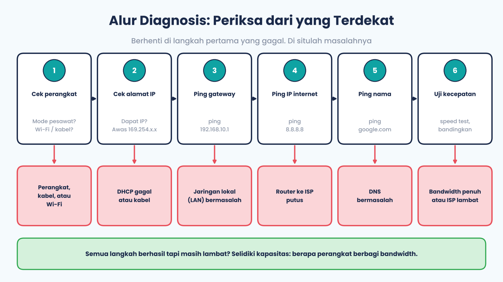
🧪 Coba Sendiri: Jadi teknisi
Pilih PC, lihat hasil ping-nya, lalu tentukan diagnosisnya.
6. Sinyal Ponsel: Lebih dari Sekadar Bar
Kenapa 4 bar tapi lemot? Bar hanya mengukur kekuatan sinyal radio.
6.1 Generasi 2G sampai 5G
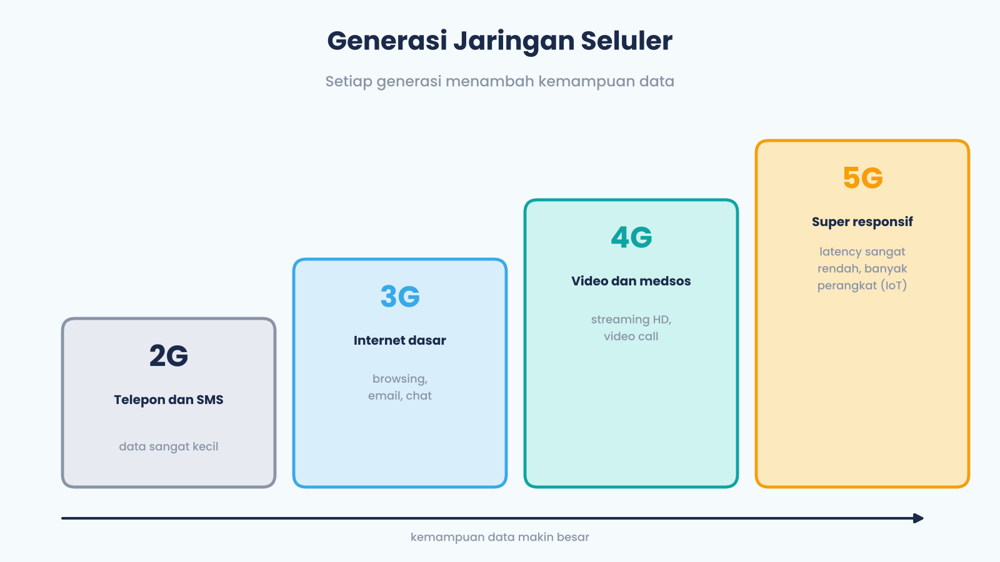
6.2 Frekuensi: Selalu Ada Kompromi
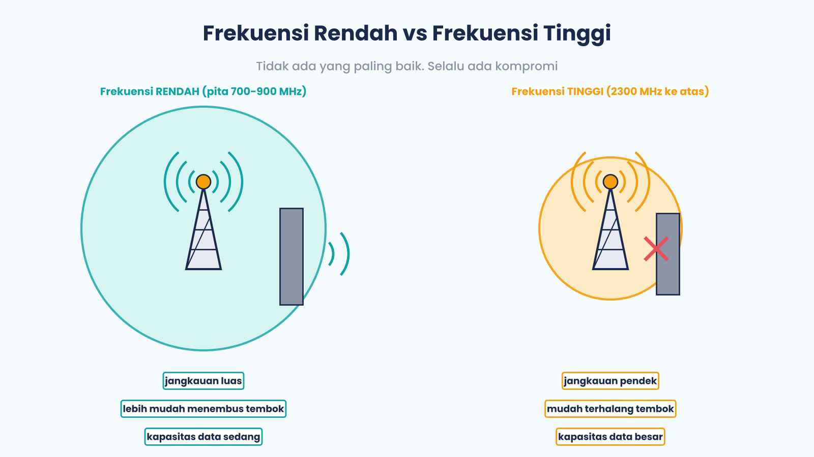
Wi-Fi juga begitu: 2,4 GHz lebih jauh jangkauannya, 5 GHz lebih cepat tapi lebih mudah terhalang.
6.3 Sel, Handover, dan Kapasitas
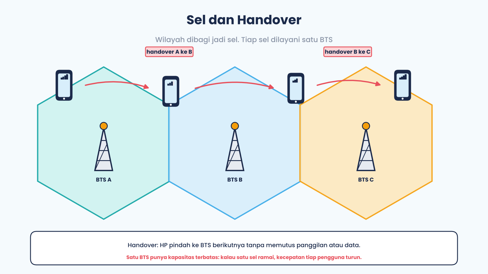
- Handover: pindah BTS tanpa memutus telepon atau data.
- Kapasitas sel terbatas: sel ramai, kecepatan tiap orang turun walau sinyal penuh.
7. Aman di Internet: Naik Level
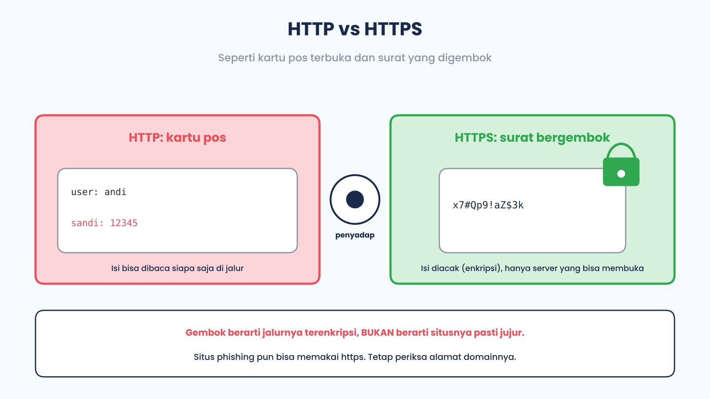
- HTTPS mengacak data antara browser dan server. Gembok perlu, tapi belum cukup. Cek nama domain!
- Wi-Fi gratis bisa disadap atau palsu.
- Password: 8 huruf kecil punya sekitar 208,827,064,576 kombinasi, 8 karakter campuran sekitar 6,095,689,385,410,816.
- Verifikasi dua langkah menambah pengaman kedua.
8. Rangkuman Kilat
| Topik | Intinya |
|---|---|
| DNS | Menerjemahkan nama domain jadi alamat IP. |
| IPv4 | 4 oktet; mask memisahkan jaringan dan perangkat; privat vs publik; DHCP; NAT; gateway. |
| Kinerja | Bandwidth, latency, packet loss. Waktu = MB x 8 / Mbps. |
| Ping | Cek dari terdekat: gateway, IP internet, nama domain. |
| Seluler | Generasi, frekuensi, sel, handover, kapasitas. Bar sinyal bukan kecepatan. |
| Aman | HTTPS perlu tapi belum cukup; waspada Wi-Fi publik; aktifkan 2FA. |
9. Kuis Mini
Jawab tiap soal, pembahasan langsung muncul.